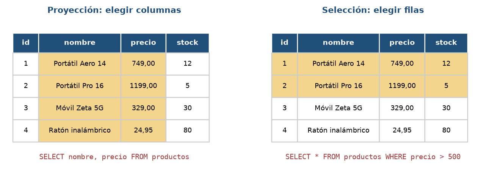
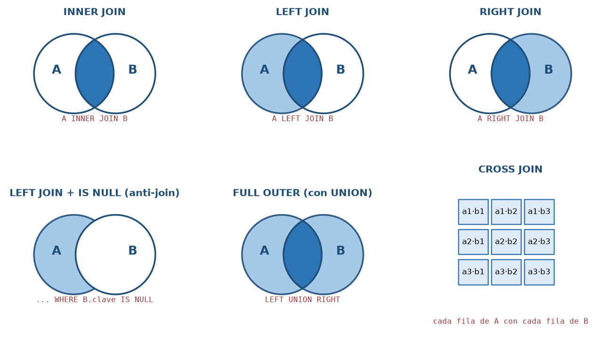
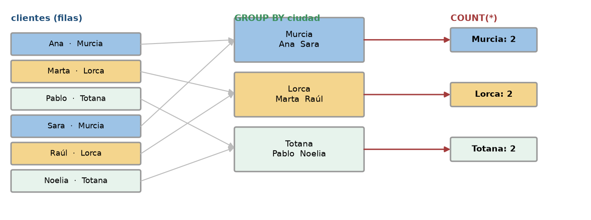
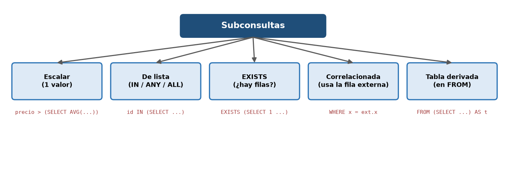
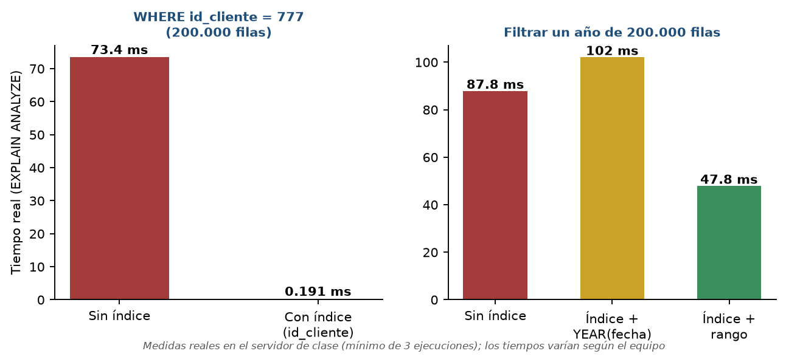

Inicio › UT4
Qué se trabaja
- Proyección, selección, ordenación y límites; funciones y expresiones.
- Composiciones internas y externas, consultas resumen, subconsultas y operadores de conjuntos.
- Optimización: índices y
EXPLAIN.
Pruébalo en el laboratorio
UT4 · Selección, orden y límiteUT4 · JOIN interno y externoUT4 · GROUP BY y HAVINGUT4 · Subconsulta correlacionadaUT4 · CTE y función de ventanaUT4 · CASE y UNION
Figuras de la unidad




